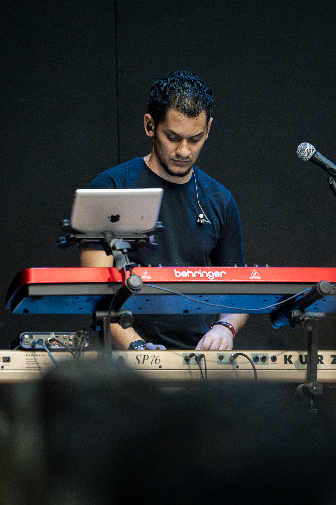
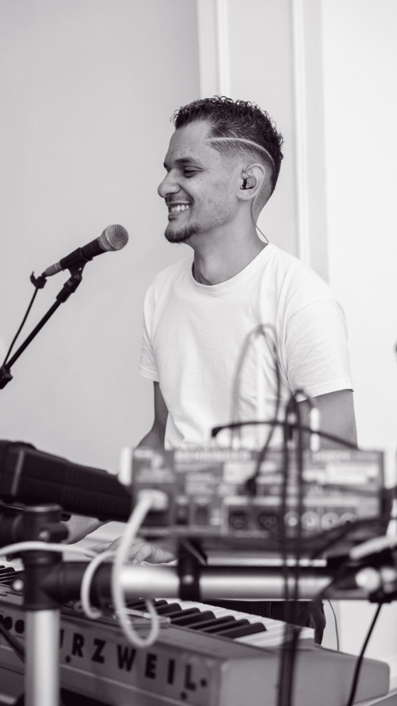
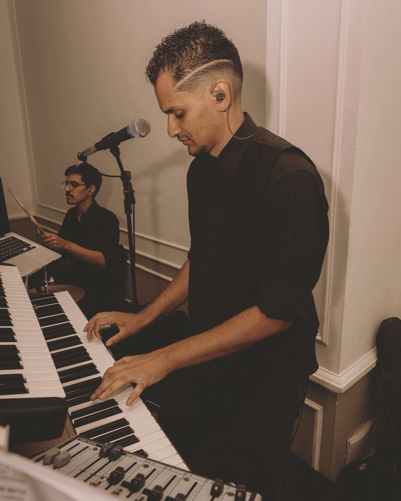

Sobre Mim
Tecladista, produtor musical e apaixonado por timbres, síntese e performance ao vivo.
Voltar ao InícioTecladista, produtor musical e apaixonado por timbres, síntese e performance ao vivo.
Voltar ao InícioRodrigo DiiH é tecladista, produtor musical e apaixonado por timbres, síntese e performance ao vivo. Depois de anos utilizando VSTs, workstations e setups profissionais em palco, começou a desenvolver packs de timbres focados em musicalidade real, praticidade e impacto sonoro para músicos modernos.
Seu trabalho nasceu da experiência prática em igrejas, apresentações ao vivo, ensaios e produções musicais, sempre buscando timbres prontos para funcionar no contexto real de performance — sem complicação e sem excesso de edição.
Com uma abordagem moderna, Rodrigo une a flexibilidade dos VSTs com a identidade sonora dos grandes teclados e sintetizadores, criando bibliotecas voltadas para worship, palco, ambient, synths, pianos, pads e texturas cinematográficas.
Cada pack é desenvolvido pensando na experiência do músico ao tocar: dinâmica, presença na mix, sensação ao vivo e inspiração musical. Mais do que apenas presets, a proposta é entregar sons que realmente conectem o músico à performance.
A proposta da DiiH Keys é simples: oferecer timbres profissionais, modernos e inspiradores para tecladistas que querem elevar o nível do seu setup sem perder praticidade.


